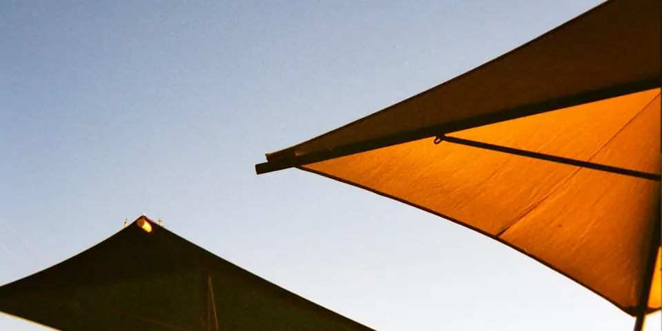

Best patio shade products for Phoenix summers
Shade sails, shade cloth, umbrellas and misting for Phoenix and Arizona patios: what to buy and how to use it in desert heat and monsoon wind.

As an Amazon Associate I earn from qualifying purchases. Links marked Paid link go to Amazon; prices and availability are shown on Amazon. These are product picks, not contractor listings.
In a Phoenix summer, shade decides whether your patio gets used at all. The options range from a low-cost sail to heavy-duty fabric, plus misting to add cooling underneath.
These picks cover shade for seating, play areas and gardens.
Our picks
Coolaroo 90% UV block heavy-duty shade sail
Premium shade built for long sun exposure
View on AmazonPaid link. We may earn a commission if you purchase.Sun shade sail, 10 x 13 ft rectangle
Budget shade over a patio or play area
View on AmazonPaid link. We may earn a commission if you purchase.Lasko Misto outdoor misting blower fan
Portable patio cooling with no install
View on AmazonPaid link. We may earn a commission if you purchase.Comparison
| Product | Best for | Key features | Link |
|---|---|---|---|
| Coolaroo 90% UV block heavy-duty shade sail | Premium shade built for long sun exposure | Heavy duty, 90% UV block | View on Amazon |
| Sun shade sail, 10 x 13 ft rectangle | Budget shade over a patio or play area | 10 x 13 ft rectangle | View on Amazon |
| Shade&Beyond 90% shade cloth with grommets | Protecting gardens and new plants from June sun | 90% shade, Grommets | View on Amazon |
| Sunnyglade 9 ft patio umbrella | Movable shade for patio tables | 9 ft | View on Amazon |
| 26 ft patio misting kit | Adding cooling mist under a patio cover | 26 ft line | View on Amazon |
| Lasko Misto outdoor misting blower fan | Portable patio cooling with no install | Misting fan | View on Amazon |
Paid link. We may earn a commission if you purchase.
The picks in detail
Coolaroo 90% UV block heavy-duty shade sail
Coolaroo · Patio & Shade
Best for: Premium shade built for long sun exposure.
- Established shade brand
- Heavy-duty fabric
- Costs more than generic sails
Sun shade sail, 10 x 13 ft rectangle
Unbranded · Patio & Shade
Best for: Budget shade over a patio or play area.
- Low cost shade
- Popular, well-reviewed
- Needs solid anchor points; take down before monsoon winds
Shade&Beyond 90% shade cloth with grommets
Shade&Beyond · Patio & Shade
Best for: Protecting gardens and new plants from June sun.
- Grommets make it easy to hang
- Good over gardens and pergolas
- 90% may be too much shade for vegetables; lower percentages exist
Sunnyglade 9 ft patio umbrella
Sunnyglade · Patio & Shade
Best for: Movable shade for patio tables.
- Moves with the sun
- Low cost
- Close it in wind; it needs a heavy base
26 ft patio misting kit
Unbranded · Patio & Shade
Best for: Adding cooling mist under a patio cover.
- Very low cost cooling
- Connects to a garden hose
- Hard water can clog nozzles; clean them often
Lasko Misto outdoor misting blower fan
Lasko · Outdoor Living
Best for: Portable patio cooling with no install.
- No installation
- Moves to wherever you sit
- Needs an outlet and a water connection
Shade tips for Arizona
- Anchor sails to solid posts or framing. Wind load on a sail is large.
- Loosen or take down sails before monsoon storms.
- Misting works best in dry heat. It cools less on humid monsoon days.
- Pair shade with sun-proof furniture. See our patio furniture guide.
FAQ
Do shade sails work in Phoenix?
Yes, they are one of the most popular low-cost shade options. Use solid anchor points and take them down or loosen them before strong monsoon winds.
What shade percentage is best for a patio?
Higher shade percentages block more sun, which suits seating areas. Gardens and vegetables often do better with lighter shade.
Do patio misters work in Arizona?
Misting cools best in dry, low-humidity heat, which describes most Arizona summers outside of monsoon humidity. Hard water can clog nozzles, so clean them regularly.
Related
- Patio furniture that survives Arizona sun
- How much does a paver patio cost in Arizona?
- New home in Arizona? Your backyard guide
- Best drip irrigation systems for Arizona yards
- Essential yard tools for new Arizona homeowners
- Best tools for installing decorative rock
- Best weed control tools for Arizona yards
How we pick: products are chosen for Arizona conditions from established brands with strong, long-running Amazon buyer feedback and clear specs. We have not hands-on tested every product. Check current price, size and specs on Amazon before buying.